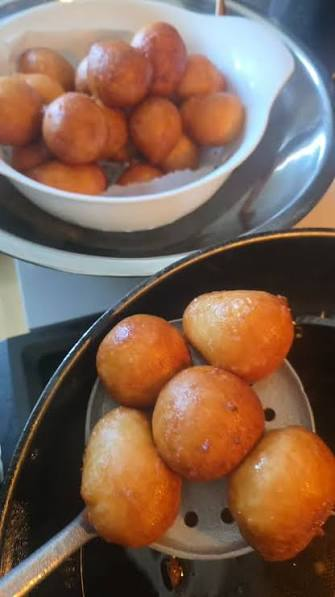
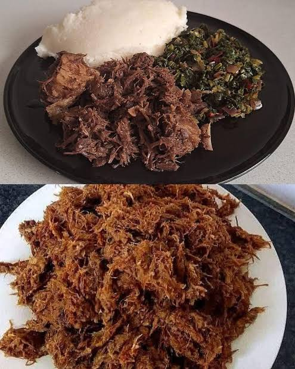
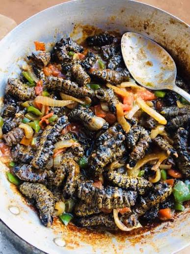
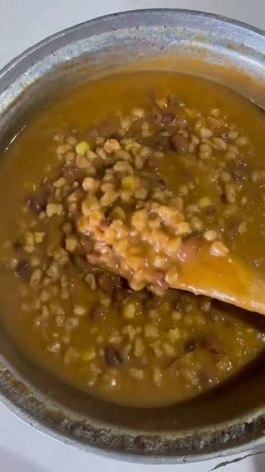

Traditional Recipes & Preparation

Magwinya (Fat Cakes)
Ingredients: Flour, Sugar, Yeast, Warm Water, Salt, Oil for deep frying.
Method: Mix dry ingredients, add warm water to form a soft dough. Let it rise for 45 minutes, shape into balls, and deep fry until golden brown.

Diphaphatha
Ingredients: Flour, Yeast, Sugar, Warm Water, Pinch of Salt.
Method: Knead dough until smooth, roll out into flat rounds, and cook slowly on a dry heavy-bottom pan on low heat until puffed and golden on both sides.

Traditional Seswaa
Ingredients: Beef or goat meat on the bone, Coarse salt, Water.
Method: Boil meat in a three-legged pot with water and salt until completely soft and falling off the bone. Remove bones and pound the meat thoroughly using a wooden pestle.

Phane (Mopane Worms)
Ingredients: Dried or rehydrated phane, Tomatoes, Onions, Cooking oil, Salt, Chili (optional).
Method: Clean and boil phane until tender. Drain excess water, add a little oil, chopped onions, and tomatoes, then fry until aromatic and slightly crispy.

Bogobe jwa Lerotse
Ingredients: Sorghum meal, Lerotse melon (dikodu), Water, Sodium bicarbonate (lefi).
Method: Boil diced lerotse melon with a little water until it breaks down completely into a pulp. Add lefi to foam it up, then gradually stir in sorghum meal while whisking to create a smooth, fragrant porridge.

Dikgobe
Ingredients: Samp (corn kernels) or sorghum grains, Cowpeas (dinawa), Salt, Water, Fat or butter.
Method: Soak samp and beans overnight. Boil them together in a large pot on low heat for several hours until very soft. Season with salt and a spoonful of fat before serving.

Serobe
Ingredients: Cleaned goat/sheep intestines and tripe, Water, Salt, Onion, Traditional spices.
Method: Chop the cleaned offal into small bite-sized pieces. Place into a pot with water and salt, simmer slowly for hours until very tender and rich in its own broth.

Morogo wa Dinawa
Ingredients: Dried cowpea leaves (morogo), Tomatoes, Onions, Salt, Peanut butter (optional).
Method: Rehydrate and boil the dried cowpea leaves until tender. Drain, then fry with chopped onions and tomatoes. Stir in a spoonful of smooth peanut butter for rich flavor if desired.